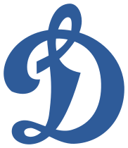
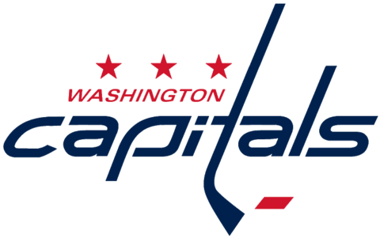

Алекса́ндр Миха́йлович Ове́чкин (род. 17 сентября 1985 года, Москва) — российский хоккеист, левый крайний нападающий и капитан клуба НХЛ «Вашингтон Кэпиталз». Обладатель Кубка Стэнли 2018 года.
Трёхкратный чемпион мира (2008, 2012, 2014).
Начал профессиональную карьеру в московском «Динамо» в 16 лет. На драфте 2004 года
выбран «Вашингтоном» под общим первым номером. В американском клубе провёл 16 сезонов,
в 2010 году стал капитаном. В январе 2008 года подписал с «Вашингтоном» 13-летний контракт
на 124 миллиона $, став первым хоккеистом, заключившим контракт более чем на
100 миллионов $.
В сборной России дебютировал в 17 лет, став на тот момент самым молодым
игроком в её истории. Участвовал в тринадцати чемпионатах мира, стал трёхкратным чемпионом
мира (2008, 2012, 2014), также выступал на трёх Олимпийских играх (2006, 2010 и 2014).
 